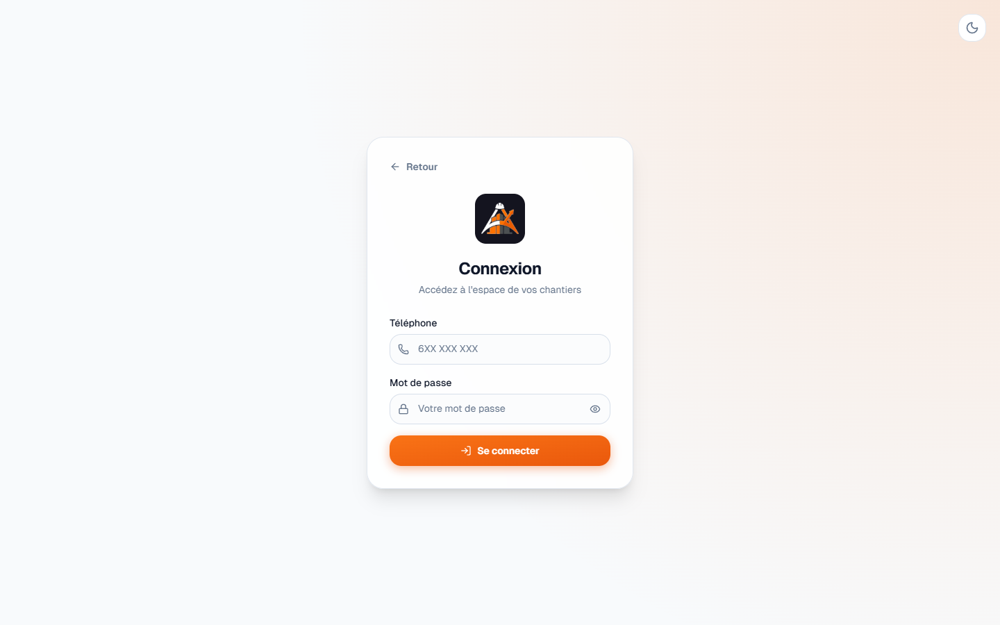
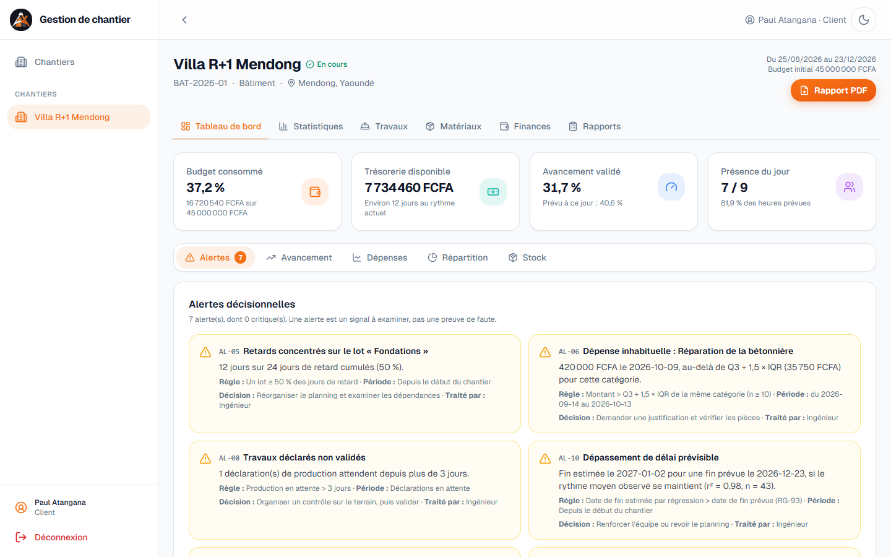
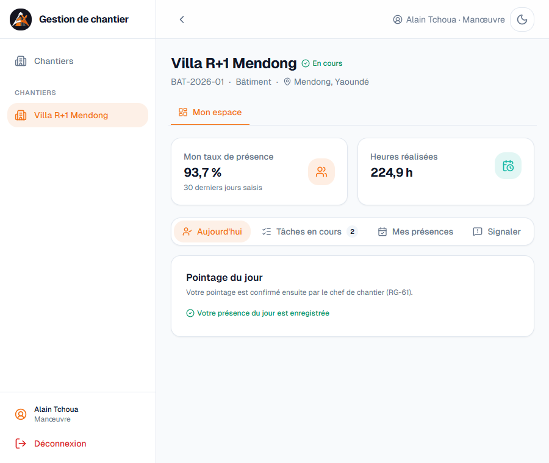

Manuel d'utilisation
Plateforme de gestion de chantier
Ingénieur · Client · Chef de chantier · Manœuvre
| Version | Octobre 2026 |
| Accès | Navigateur web, sur ordinateur ou téléphone |
| Identifiant | Votre numéro de téléphone |
Plateforme de gestion de chantier
Ingénieur · Client · Chef de chantier · Manœuvre
| Version | Octobre 2026 |
| Accès | Navigateur web, sur ordinateur ou téléphone |
| Identifiant | Votre numéro de téléphone |

| Téléphone | Rôle | Mot de passe |
|---|---|---|
| 690000001 | Ingénieur | Chantier2026 |
| 690000002 | Client du chantier « Villa R+1 Mendong » | |
| 690000003 | Client du chantier « Route Nkolbisson » | |
| 690000010 | Chef de chantier de la villa | |
| 690000100 | Manœuvre de la villa |

L'ingénieur administre la plateforme : il crée les chantiers et les comptes, valide les saisies et pilote avec les statistiques.
| Quoi | Où | Action |
|---|---|---|
| Dépenses au-dessus du seuil | Finances → Dépenses | Valider, ou Rejeter avec un motif ; puis Marquer payée le jour du paiement |
| Avances du client | Finances → Avances | Confirmer à la réception des fonds, ou Rejeter |
| Production déclarée | Travaux → En attente | Valider une ligne, ou Tout valider après contrôle sur le terrain |
| Fin d'une tâche | Travaux → Tâches | Clôturer ; si la tâche finit en retard, choisissez la cause |
| Inventaires | Stock → Inventaires | Valider : le stock théorique est aligné sur le comptage |
| Rapports journaliers | Rapports → Rapports | Valider : le client peut alors les lire |
| Signalements | Rapports → Signalements | Écrire une réponse, puis Clore |
Le chef de chantier saisit les opérations de la journée. Une saisie du jour reste modifiable jusqu'au lendemain ; au-delà, seul l'ingénieur peut corriger.
| Opération | Comment faire |
|---|---|
| Réception d'une livraison | Cadre Mouvement → type Entrée, quantité, prix unitaire, numéro du bon de livraison. La dépense correspondante est créée automatiquement. |
| Consommation | Type Sortie, quantité, et la tâche qui consomme le matériau. |
| Perte ou casse | Type Perte, avec le motif (pluie, casse, vol…). |
| Renvoi au fournisseur | Type Retour fournisseur, avec le motif. |
| Erreur de saisie | Cadre Historique → Corriger, le jour même. Rien n'est effacé : une opération opposée est créée. |
| Inventaire de la semaine | Cadre Inventaires : comptez le stock et saisissez le stock physique. L'écart est calculé automatiquement. |

Cadre Nouvelle dépense : catégorie, libellé, montant en FCFA, date, numéro de facture ou de reçu et, si possible, la photo ou le PDF du justificatif (4 Mo au plus). Sous le seuil du chantier, la dépense est validée tout de suite ; au-dessus, elle attend l'ingénieur. Une dépense sans justificatif peut être complétée ensuite avec le bouton Justifier.
Cadre Production du jour : pour chaque tâche travaillée, la quantité réalisée, les heures travaillées par l'équipe sur cette tâche et l'effectif. L'ingénieur valide ensuite. Quand un manœuvre signale la fin d'une tâche, cliquez sur Confirmer la fin dans le cadre Tâches.

Cadre Nouveau rapport, chaque jour : météo, travaux réalisés, incidents, observations. Un rapport manquant le lendemain à midi déclenche une alerte chez l'ingénieur.

Le manœuvre dispose d'un espace simplifié, pensé pour le téléphone.

| Indicateur | Signification |
|---|---|
| Budget consommé | Dépenses validées ÷ budget. Ce n'est pas l'argent disponible. |
| Trésorerie disponible | Avances validées − dépenses payées : l'argent réellement en caisse. |
| Dépense engagée | Validée mais pas encore payée. |
| Avancement validé | Part des travaux réalisés et contrôlés, pondérée par le coût des tâches. |
| SPI | Sous 1 : le chantier est en retard sur son planning. |
| CPI | Sous 1 : les travaux coûtent plus que prévu, ou une partie de l'argent dort en stock. |
| Fin estimée | Date à laquelle on atteindrait 100 % si le rythme observé se maintient ; affichée seulement si la tendance est fiable. |
| Autonomie | Nombre de jours avant d'épuiser le stock au rythme des 10 derniers jours. |
| Coefficient de variation | Régularité d'une série : sous 15 % homogène, au-delà de 30 % irrégulière. |
| Message | Signification et solution |
|---|---|
| Téléphone ou mot de passe incorrect | Vérifiez la saisie avec l'œil ; sinon, demandez à l'ingénieur de vérifier que votre compte est actif. |
| Stock insuffisant : faites un inventaire | La sortie dépasse le stock enregistré. Vérifiez la quantité, ou faites l'inventaire si le stock réel diffère. |
| Saisie close : seul l'ingénieur peut saisir au-delà de la veille | Les saisies anciennes sont réservées à l'ingénieur : demandez-lui de corriger. |
| Une sortie doit indiquer la tâche qui consomme | Choisissez la tâche dans la liste avant d'enregistrer. |
| Un seul jour de repos par semaine | Un jour de repos est déjà déclaré cette semaine ; annulez-le d'abord si vous voulez le déplacer. |
| Chantier suspendu ou clôturé | Plus aucune saisie n'est possible ; seul l'ingénieur peut reprendre un chantier suspendu. |
| Clôture refusée | Des éléments attendent une validation : l'application en donne la liste. |
| Page introuvable | La page n'existe pas, ou le chantier ne fait pas partie de votre périmètre. |